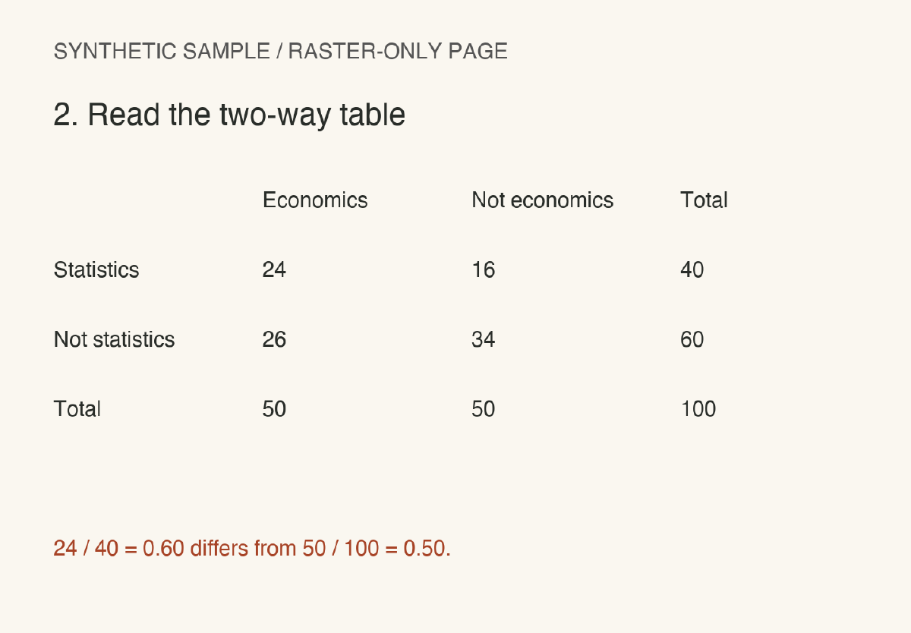

01 / THE IDEA
In the previous lecture, changing the reference group gave us 60% instead of 24%. Now ask a new question: does knowing that a student takes statistics change the chance that they take economics? Compare the same event, E, before and after learning S.
The survey case continues: Comparing 60% with the joint probability of 24% cannot answer that question: the joint event means taking both subjects. We still need the overall share taking economics, whether or not they take statistics. This lecture adds that missing count for the same 100 students.
Fifty of all 100 students take economics: 50/100 = 0.50. Within the statistics group, the share is 24/40 = 0.60. Since 0.50 and 0.60 differ, knowing S changes the probability of E in this survey.
Lecture 2 · PDF p. 1Events are when their joint probability equals the product of their individual probabilities. If P(S) > 0, an equivalent test is P(E | S) = P(E).
The equality is the independence condition, not a formula that holds for every pair of events.
The unconditional share of economics students is the : 0.50, compared with 0.60 among statistics students. These events are not independent in this survey.
Lecture 2 · PDF p. 1The conditional comparison shows a difference. How can all the survey counts check that same conclusion? Read the table and apply the product test.
02 / SOURCE FIGURE
The previous comparison used 60% within S and 50% overall. The source table organizes the same survey into rows and columns. Its totals let us calculate the marginal probabilities and apply the equivalent product test introduced above.

The observed joint probability is 24/100 = 0.24. Independence would require (50/100) × (40/100) = 0.20. Since 0.24 ≠ 0.20, the condition fails.
This calculation applies the rule from page 1 to the counts on page 2.
Rule · p. 1Counts · p. 2Both tests now give the same conclusion. Which comparison provides evidence for it, and why are the subject names alone insufficient? Explain your choice.
03 / CHECK YOUR REASONING
You have checked the same survey with a conditional comparison and a product comparison. Use that numerical evidence to explain the decision, including why the conditional test applies.
Having members tells you that both events are possible. Does it tell you whether learning one event changes the probability of the other?
Different subject names describe the events. What numerical relationship would you need to check before deciding whether the events are independent?
The first comparison directly tests independence because P(S) is positive. Nonempty events can be independent or dependent. Being different subjects tells us nothing by itself about the probability relationship.
Check the source · p. 1An association in these counts does not establish a causal effect of studying one subject on choosing the other.
For the next pair of events you encounter, which probabilities would you need to compare? Choose a test, check its conditions, and use the counts to justify your conclusion as you did for this survey.